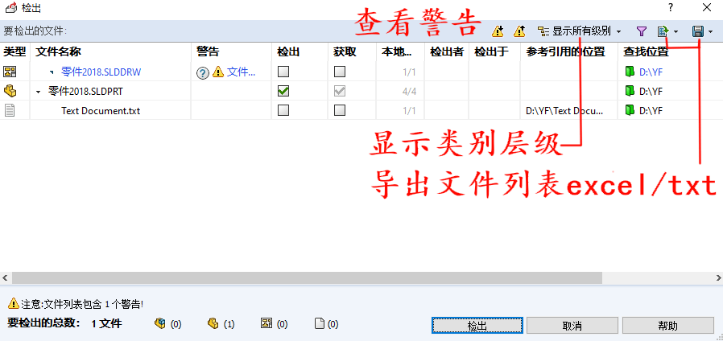
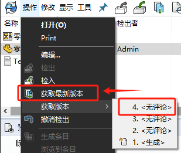

PDM本地文件导入操作
添加到库
将文件添加到PDM库中，按照预定的文件夹结构在相对应的项目文件夹内添加文件即可，有如下2方法：
方法1：将计算机本地的文件零件图纸存放到对应类型的文件夹内；

方法2：使用SOLIDWROSK新建文件时，使用零件或者图纸模板进行新建，最后保存到库内相对应的项目内即可

PDM里的文件在检出检入时，会有不同的状态：对于现在刚刚复制到库中的文件，一般会是<私有状态>
私有状态：私有状态文件是其他用户添加到库中的文件，但还未检入。
检入状态：此文件当前没有被编辑，有权限的用户可以将其检出编辑，打开该状态的文件为“只读”打开。
检出状态：当文件被其他用户检出编辑时，其他用户无法同时检出编辑，只能查看复制，但是不能修改保存。
操作-检入
对于<私有状态>文件，其他电脑是看不到的，你需要进行【操作-检入】，将私有文件，上传到PDM数据库中，此时文件才算正式入库。

操作-检出
因为<检入状态>的文件是在库中只读的文件，如需对库中文件进行编辑，则需要进行【操作-检出】处理。
操作-查看版本
在检出检入过程中，文件会进行过程版本的记录控制，我们也能在【操作-获取版本】这里，查看到修改的历史版本文件，以及对应修改的评论说明
